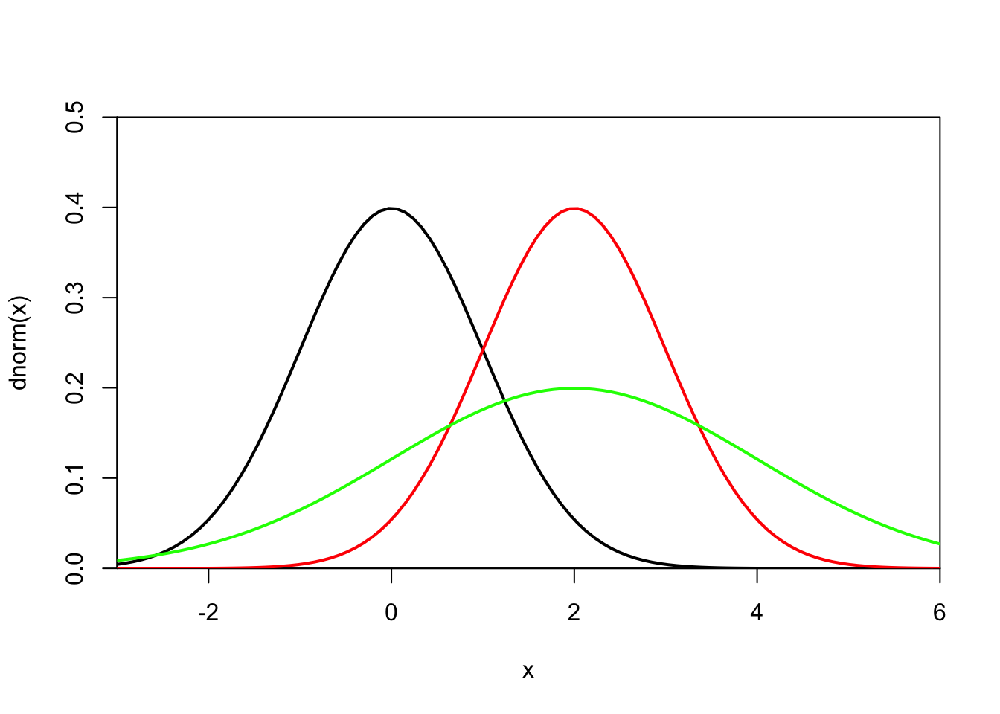
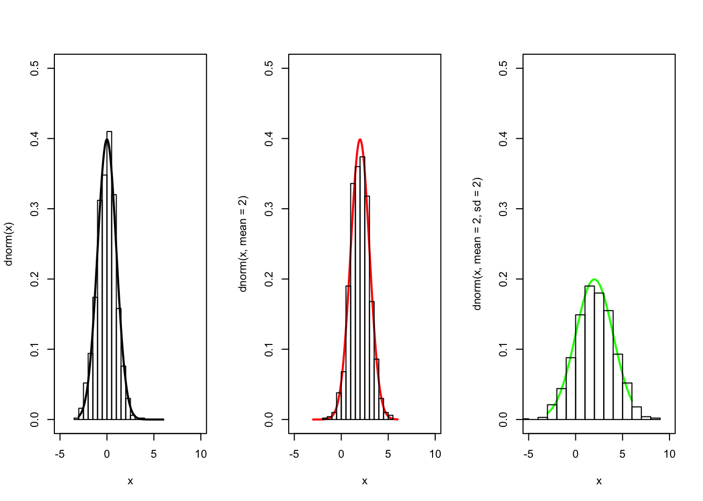

RStudio project
Open the RStudio project that we created in the previous session. I recommend to use this RStudio project for the entire course and within the RStudio project create separate R scripts for each session.
# Session 5: Descriptive statistics and random numbers and save the file in your folder “scripts” within your project folder, e.g. as “5_SimpleStats.R”Statistics are at the heart of R and probably the reason why I learned this language in the first place. Here, I will just provide a brief overview of descriptive summary statistics, probability distributions, and random numbers. I don’t introduce simple linear regression here as we will do a lot of regression in the other weeks.
These describe data samples, for example the central tendency, spread and variance, or relationships in cases of bi- or multivariate data.
Important functions to know for first and second order moments are:
mean(x), weighted.mean(x), median(x) : arithmetic mean, weighted mean, and median of a vector (here: x)quantile(x, probs=p) : the p% quantile of vector xsd(x), var(x): standard deviation, and variance (both with denominator n-1)mad(x) : median absolute deviationrange(x) : minimum and maximum valuesdiff(range(x)) : spreaddiff(quantile(x,c(0.25,0.75))) : interquartile rangecor(x,y), cov(x,y) : correlation coefficient, and covarianceR offers several built-in probability distributions, which usually come with four functions: probability density function (prefix d for density), cumulative distribution function (prefix p for probability), a function for calculating quantiles (prefix q for quantiles) and a function for generating (pseudo-) random numbers (prefix r for random).
Have a look at the help pages to find all the built-in distributions: ?Distributions
Let’s have a look at the normal distribution. As default, R assumes the standard normal distribution with mean=0 and sd=1. We first look at the probability density function. This shows us the probability (or relative likelihood) that a random sample from a population (or the sample space) takes a specific value.
x <- seq(-10, 10, by = 0.5)
# the standard normal distribution
curve(dnorm(x), -3, 6, lwd = 2, xaxs = "i", yaxs = "i", ylim = c(0, 0.5)) #plots density function
# changing the parameters for mean and sd
curve(dnorm(x, mean = 2), -3, 6, col = "red", add = TRUE, lwd = 2)
curve(dnorm(x, mean = 2, sd = 2), -3, 6, col = "green", add = TRUE, lwd = 2)
We see that the shape and the location of the bell curve changes according to the parameters mean and sd. So, what is the probability that a random sample from the different populations (the differently coloured bell curves in this case) take the value x=0?
# look at black curve in above plot:
dnorm(0)## [1] 0.3989423# look at red curve in above plot:
dnorm(0, 2)## [1] 0.05399097# look at green curve in above plot:
dnorm(0, 2, 2) ## [1] 0.1209854We can also draw random numbers from these distributions using the function rnorm().
# draw 10 random numbers from the standard normal distribution:
rnorm(10)## [1] -0.3329040 -0.8617216 -0.2666009 -1.0804125 0.6430441 1.1404909
## [7] -1.7393806 -0.8139169 0.3117974 -0.8592103par(mfrow=c(1,3))
# plot the density function
curve(dnorm(x), -3, 6, lwd = 2, ylim = c(0, 0.5), xlim=c(-5,10))
# draw random numbers and plot as histogram
hist(rnorm(1000), freq=F, col=NULL, add=T)
# change parameter mean
curve(dnorm(x, mean = 2), -3, 6, col = "red", lwd = 2, ylim = c(0, 0.5), xlim=c(-5,10))
hist(rnorm(1000, mean=2), freq=F, col=NULL, add=T)
# change parameters mean and sd
curve(dnorm(x, mean = 2, sd = 2), -3, 6, col = "green", lwd = 2, ylim = c(0, 0.5), xlim=c(-5,10))
hist(rnorm(1000, mean=2, sd=2), freq=F, col=NULL, add=T)
Extra: Also have a look at the cumulative density function pnorm() and the quantile function qnorm().
Another very useful feature is that we can draw samples from a vector using sample(). As arguments, it takes a scalar or vector from which to draw, and the number of samples to draw. Per default, samples are drawn without replacement.
sample(1:30, size = 20) # without replacement
sample(30, size = 20) # same
sample(1:30, size = 20, replace = TRUE) # with replacement
sample(letters, 10)Exercises:
Task 1: What other probability distributions do you think could be useful and why? Create a sample with n = 1000 draws from one of these distributions.
Task 2: Use the sample to estimate the parameters of the density function you applied for the random draw. Do these estimated parameters differ from the ones you specified to draw the sample? (Hint: you can use the R documentation for your probability function or try google to work out how to calculate the parameters from your samples)